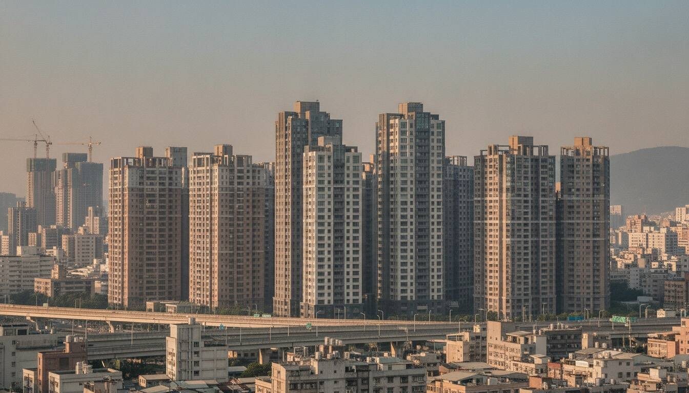

桃園市地價稅怎麼算？先把名下桃園市土地的申報地價加總，對照桃園市當年「累進起點地價」3,439,000 元：自用住宅用地（符合條件）適用 2‰；一般用地未達起點課 10‰，超過部分按 15‰～55‰ 六級累進。每年 11 月開徵、繳納至 11/30。
桃園市近年人口持續成長，土地需求旺盛，地價也逐年上升。每年11月的地價稅繳款單，讓不少地主開始認真思考：稅是怎麼算的？本文從基礎概念到實際計算，帶你完整看懂桃園市地價稅，附上免費試算工具，5分鐘掌握自己的稅額。
很多人把地價稅和房屋稅搞混。兩者都是持有房地產的稅，但課徵對象不同：
買了一間有地的房子，就要同時繳這兩種稅。一般住宅的地價稅每年繳一次，金額依土地面積、申報地價與適用稅率而定。
課稅地價＝每平方公尺申報地價 × 課稅面積（㎡）
申報地價通常為公告地價的 80%。若你不確定自己的申報地價，可向桃園市政府地方稅務局查詢，或使用本文後附的試算工具連結到官方系統查詢。
桃園市 115-116 年（2026-2027年）累進起點地價為 3,439,000 元。你的課稅地價除以這個數字，就知道落在哪個級距：
💡 累進起點地價是計算地價稅的基準，每兩年由各縣市重新公告一次。桃園市115-116年為 343.9 萬元，T值相對較低，意味著課稅地價較容易超過一倍門檻，進入第二級（15‰）以上。桃園近年地價上漲，建議每兩年重新試算一次。
稅額＝課稅地價 × 適用稅率 － 累進差額
| 級次 | 課稅地價範圍（元） | 稅率 | 累進差額（元） |
|---|---|---|---|
| 第一級 | 3,439,000 以下 | 10‰ | 0 |
| 第二級 | 3,439,001 ～ 20,634,000 | 15‰ | 17,195 |
| 第三級 | 20,634,001 ～ 37,829,000 | 25‰ | 223,535 |
| 第四級 | 37,829,001 ～ 55,024,000 | 35‰ | 601,825 |
| 第五級 | 55,024,001 ～ 72,219,000 | 45‰ | 1,152,065 |
| 第六級 | 72,219,001 以上 | 55‰ | 1,874,255 |
依土地稅法第16條及桃園市政府公告，115-116年（2026-2027年）適用。
📋 已知條件：申報地價 25,000 元/㎡，課稅面積 100 ㎡
課稅地價 ＝ 25,000 × 100 ＝ 2,500,000 元
2,500,000 ÷ 3,439,000 ≈ 0.73 倍 → 第一級（≤1倍）
稅額 ＝ 2,500,000 × 10‰ － 0 ＝ 25,000 元／年
📋 已知條件：申報地價 40,000 元/㎡，課稅面積 200 ㎡
課稅地價 ＝ 40,000 × 200 ＝ 8,000,000 元
8,000,000 ÷ 3,439,000 ≈ 2.33 倍 → 第二級（1倍～6倍之間）
稅額 ＝ 8,000,000 × 15‰ － 17,195 ＝ 120,000 － 17,195 ＝ 102,805 元／年
一般用地的最低稅率是 10‰，但自用住宅用地只要 2‰，稅額可差到 5 倍以上。這個優惠不是自動給的，必須主動申請。
⚠️ 常見誤區：購屋後不知道要申請自用優惠，繼續以一般稅率繳稅，往往多繳好幾年才發現。若有符合條件，建議盡快補申請（最多可溯及申請前一年）。
如果你名下有多筆土地，這些土地的課稅地價需要合計計算，再依總地價確認級距、分攤累進差額。這個計算比較複雜，本試算工具僅提供單筆簡易試算，多筆土地建議直接聯絡桃園市政府地方稅務局或委由專業人員處理。
公告地價是政府評定的土地基準價，地主可以依此自行申報，通常申報地價為公告地價的 80%。申報過高，地價稅會增加；申報過低（低於公告地價 80%），則以 80% 計算。
目前桃園市地價稅不提供分期繳納制度，但稅額較高者可洽稅務局了解其他協助方案。部分信用卡有地價稅分期零利率優惠（需洽發卡銀行）。
繼承後土地以繼承人名義登記，地價稅由繼承人繳納。若多人繼承（公同共有或分別共有），依持分比例分攤課稅地價後，各自計算稅額。
依土地稅法規定，工廠用地（工業區內依法設立工廠使用的土地）適用 10‰ 的固定稅率，不適用累進制度。公共設施保留地適用 6‰。